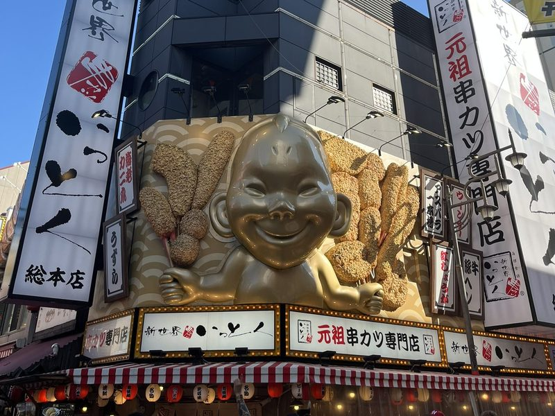
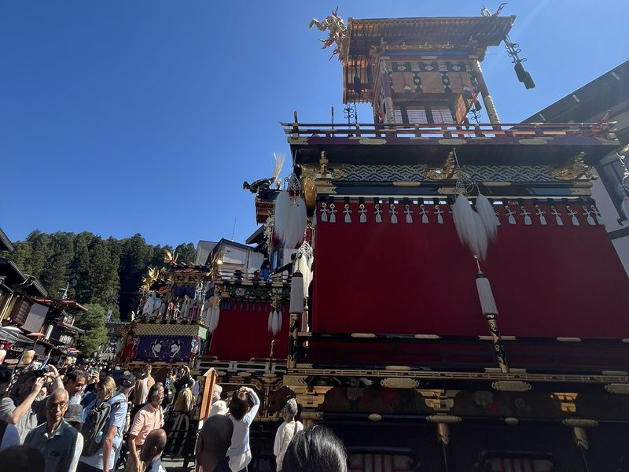
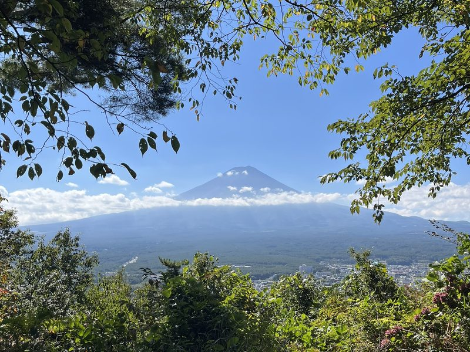
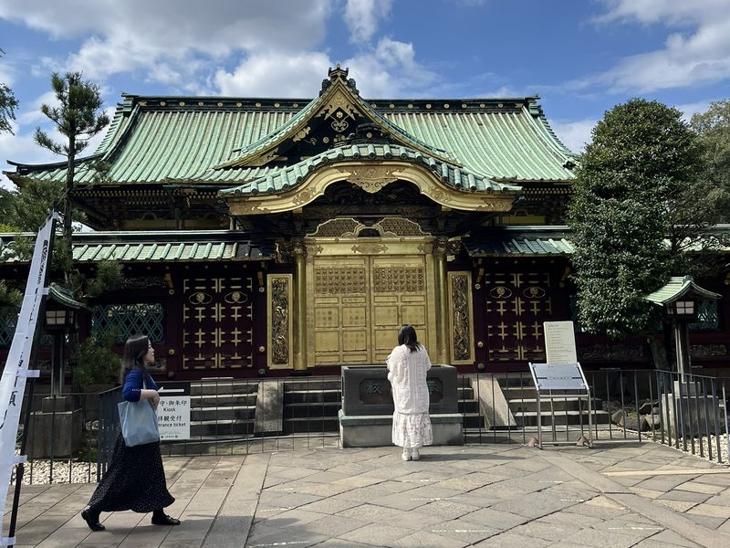

Okayama & Naoshima
Karel Appel was here
Het kunsteiland Naoshima is voor velen een hoogtepunt, maar ik voel me er enigszins belazerd door het kunstsysteem waar alles om draait.
20/10/2026Okayama & Naoshima
Het kunsteiland Naoshima is voor velen een hoogtepunt, maar ik voel me er enigszins belazerd door het kunstsysteem waar alles om draait.
20/10/2026
Osaka & Kyoto
Ik trek aan touwtjes van brandmelders en laat producten vallen in winkels. Normaal een doodzonde in het beleefde Japan, maar in Osaka valt een geluid meer of minder niet op.
17/10/2026
Takayama
Zoals bij elk land hangt er een bepaald geurtje aan Japan, maar in Takayama is het bijna louter de berglucht die de straten domineert.
12/10/2026
Mount Fuji
Je kunt je een grote tante voelen in Japan: de gangetjes zijn smal, het plafond laag – maar door Mount Fuji word je weer even terug op je miezerige voeten gezet.
10/10/2026
Tokyo
Tokyo: wat een metropool. Ik zal je alleen vertellen wat ik zie, en dat is verre van de waarheid.
06/10/2026